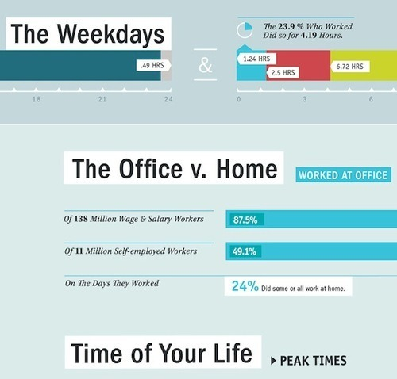

Wed, 01 Sep 2010 17:25:00 · infographic · good.is · Americans · Work · BryanConnor
Infographic: How Americans Work & How They Live
An interesting study on how Americans split their time between work for a living and how they live.
You probably familiar with the saying, “There are more important things in life other than work…”, yet most most people spend almost majority of their adult time at work, whether or not they like what they do, that’s another matter.

Curious on how these topic visualized? Feel free to jump here for more. ~Infographic design by Bryan Connor.